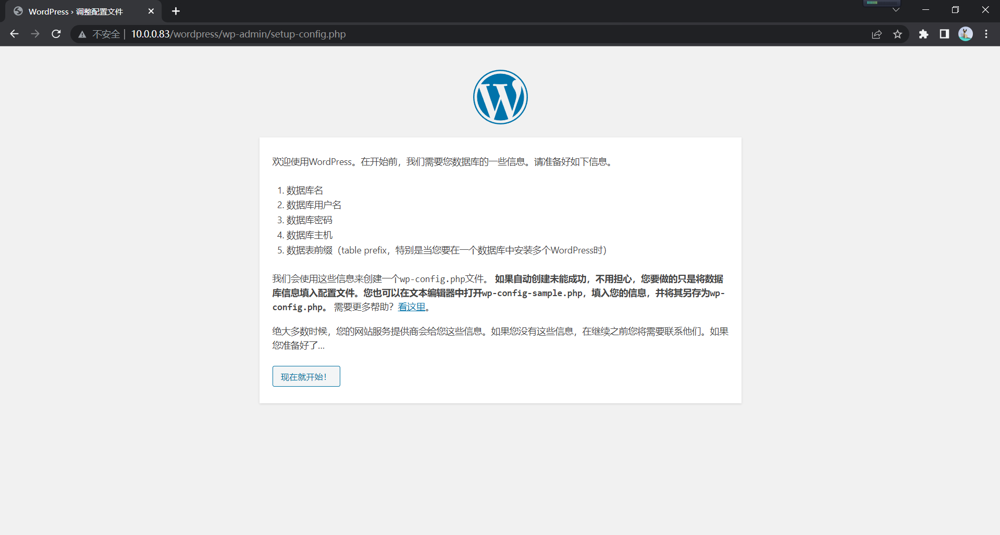

本文概述了通过Ansible部署LAMP架构、修改配置、使用web应用的主要流程
环境准备
规划
主控端：
10.0.0.150 安装Ansible，编写角色和playbook
受控端：
10.0.0.83 提供web服务
10.0.0.84 为web服务器处理php程序
10.0.0.157 数据库
Ansible准备
以上受控主机root密码一致，若不一致还需要先实现基于Key验证的SSH免密登录
需要注意selinux和防火墙规则，防止影响实验
1
2
3
4
5
6
7
8
9
10
11
12
13
14
15
16
17
18
19
20
21
22
23
24
25
26
27
28
29
30
31
32
33
34
35
36
37
38
39
40
41
42
43
44
45
46
47
48
49
50
51
52
|
[root@centos8 ~]$mkdir /root/LAMP/ansible -p
[root@centos8 ~]$cd /root/LAMP/ansible
[root@centos8 ~/LAMP/ansible]$vim inventory
[Apache]
10.0.0.83
[php]
10.0.0.84
[mysql]
10.0.0.157
[all:vars]
ansible_user=root
ansible_password=12345
[root@centos8 ~/LAMP/ansible]$cp /etc/ansible/ansible.cfg ./
[root@centos8 ~/LAMP/ansible]$mkdir roles
[root@centos8 ~/LAMP/ansible]$vim ansible.cfg
inventory = /root/LAMP/ansible/inventory
roles_path = /root/LAMP/ansible/roles
host_key_checking = False
remote_user = root
[root@centos8 ~/LAMP/ansible]$ansible all -m ping
10.0.0.83 | SUCCESS => {
"ansible_facts": {
"discovered_interpreter_python": "/usr/libexec/platform-python"
},
"changed": false,
"ping": "pong"
}
10.0.0.84 | SUCCESS => {
"ansible_facts": {
"discovered_interpreter_python": "/usr/libexec/platform-python"
},
"changed": false,
"ping": "pong"
}
10.0.0.157 | SUCCESS => {
"ansible_facts": {
"discovered_interpreter_python": "/usr/libexec/platform-python"
},
"changed": false,
"ping": "pong"
}
|
LAMP部署
创建角色
1
2
3
4
5
6
7
8
9
10
11
12
13
14
15
16
17
18
19
20
21
22
23
24
25
26
27
28
29
30
31
32
33
34
35
36
37
38
39
40
41
42
43
44
45
46
47
48
49
50
51
52
53
54
55
56
57
58
59
60
61
62
63
64
65
66
67
68
69
70
71
72
73
74
75
76
77
78
79
80
81
82
83
84
85
86
87
88
89
90
91
92
93
94
95
| [root@centos8 ~/LAMP/ansible]$cd roles
[root@centos8 ~/LAMP/ansible/roles]$ansible-galaxy init apache
[root@centos8 ~/LAMP/ansible/roles]$ansible-galaxy init php
[root@centos8 ~/LAMP/ansible/roles]$ansible-galaxy init mysql
[root@centos8 ~/LAMP/ansible]$cd roles/apache
[root@centos8 ~/LAMP/ansible/roles/apache]$vim files/LAMPfcgi.conf
DirectoryIndex index.php
ProxyRequests Off
ProxyPassMatch ^/(.*\.php)$ fcgi://10.0.0.84/data/html/$1
ProxyPassMatch ^/(fpm_status|ping) fcgi://10.0.0.84
[root@centos8 ~/LAMP/ansible/roles/apache]$vim tasks/main.yml
---
- name: install
yum: name=httpd state=present
- name: copy config
copy: src=LAMPfcgi.conf dest=/etc/httpd/conf.d/
- name: start service
service: name=httpd state=started enabled=yes
[root@centos8 ~/LAMP/ansible/roles/apache]$cd ../php
[root@centos8 ~/LAMP/ansible/roles/php]$vim files/info.php
<?php phpinfo() ?>
[root@centos8 ~/LAMP/ansible/roles/php]$vim files/www.conf
listen = 0.0.0.0:9000
;listen.allowed_clients = 127.0.0.1
ping.path = /ping
pm.status_path = /fpm_status
[root@centos8 ~/LAMP/ansible/roles/php]$vim tasks/main.yml
---
- name: install php
yum: name=php-fpm state=present
- name: install php2
yum: name=php-json state=present
- name: copy config
copy: src=www.conf dest=/etc/php-fpm.d/www.conf
- name: mkdir
file: path=/var/www/html state=directory owner=apache group=apache
- name: copy phpinfo
copy: src=info.php dest=/data/html/info.php owner=apache group=apache
- name: start service
service: name=php-fpm state=started enabled=yes
[root@centos8 ~/LAMP/ansible/roles/apache]$cd ../mysql/
[root@centos8 ~/LAMP/ansible/roles/mysql]$vim tasks/main.yml
---
- name: install mariadb
yum: name=mariadb-server state=present
- name: start mariadb
service: name=mariadb state=started enabled=yes
- name: change password
shell: mysql -uroot -e " alter user root@'localhost' identified by '12345';"
- name: add database
shell: mysql -uroot -p12345 -e "create database wordpress;"
- name: add user
shell: mysql -uroot -p12345 -e "grant all on wordpress.* to wpuser@'10.0.0.%' identified by '12345' ;"
[root@centos8 ~/LAMP/ansible]$vim LAMP.yml
---
- name: apache
hosts: Apache
roles:
- apache
- name: php
hosts: php
roles:
- php
- name: mysql
hosts: mysql
roles:
- mysql
[root@centos8 ~/LAMP/ansible]$ansible-playbook LAMP.yml
PLAY RECAP **************************************************************************************************************************************
10.0.0.157 : ok=6 changed=5 unreachable=0 failed=0 skipped=0 rescued=0 ignored=0
10.0.0.83 : ok=4 changed=3 unreachable=0 failed=0 skipped=0 rescued=0 ignored=0
10.0.0.84 : ok=7 changed=6 unreachable=0 failed=0 skipped=0 rescued=0 ignored=0
|
测试
一般网页存放在10.0.0.83上，php文件放在10.0.0.84。客户端访问php页面时web服务器将会转发给10.0.0.84php服务器处理。
此时已可访问php状态页 10.0.0.83/info.php，实际访问10.0.0.84:/data/html/info.php
可使用LAMP应用，如WordPress博客，PhpMyAdmin数据库网页管理，Discuz!论坛等。
需要使用某应用只需下载安装包，解压到httpd关于php的配置文件中指定的路径中，在网页中访问该文件夹位置，会进入初始安装界面。此时可输入数据库已设定好的用户和密码。以下为WordPress为例。
需要注意的是WordPress文件夹如果所属者不是apache，则apache没有对博客文件的写权限，需要修改所属者和所属组。

LAMP更新
包含程序更新、配置更新、使用新版本网站应用，模拟实现网站升级更新。
1
2
3
4
5
6
7
8
9
10
11
12
13
14
15
16
17
18
19
20
21
22
23
24
25
26
27
28
29
30
31
32
33
34
35
36
37
38
39
40
41
42
43
44
45
46
47
48
49
50
51
52
53
54
55
56
57
58
59
60
61
62
63
64
65
66
67
68
69
70
71
72
73
74
75
76
77
78
79
80
81
82
|
[root@centos8 ~/LAMP/ansible/roles/apache]$mv tasks/main.yml tasks/install.yml
[root@centos8 ~/LAMP/ansible/roles/apache]$vim tasks/update.yml
---
- name: stop service
service: name=httpd state=stopped
- name: upgrade
yum: name=httpd state=latest
- name: copy config
copy: src=LAMPfcgi.conf dest=/etc/httpd/conf.d/
- name: start service
service: name=httpd state=started enabled=yes
[root@centos8 ~/LAMP/ansible/roles/apache]$vim tasks/main.yml
- inclued: update.yml
[root@centos8 ~/LAMP/ansible/roles/php]$mv tasks/main.yml tasks/install.yml
[root@centos8 ~/LAMP/ansible/roles/php]$vim tasks/update.yml
---
- name: stop service
service: name=php-fpm state=stopped
- name: install php
yum: name=php-fpm state=latest
- name: install php2
yum: name=php-json state=latest
- name: copy config
copy: src=www.conf dest=/etc/php-fpm.d/www.conf
- name: start service
service: name=php-fpm state=started enabled=yes
[root@centos8 ~/LAMP/ansible/roles/php]$vim tasks/main.yml
- inclued: update.yml
[root@centos8 ~/LAMP/ansible/roles/mysql]$mv tasks/main.yml tasks/install.yml
[root@centos8 ~/LAMP/ansible/roles/mysql]$vim tasks/update.yml
---
- name: stop mariadb
service: name=mariadb state=stopped
- name: install mariadb
yum: name=mariadb-server state=present
- name: start mariadb
service: name=mariadb state=started enabled=yes
[root@centos8 ~/LAMP/ansible/roles/mysql]$vim tasks/main.yml
- inclued: update.yml
[root@centos8 ~/LAMP/ansible]$vim LAMP.yml
---
- name: apache
hosts: Apache
roles:
- apache
- name: php
hosts: php
roles:
- php
- name: mysql
hosts: mysql
roles:
- mysql
[root@centos8 ~/LAMP/ansible]$vim WordPress.yml
---
- host: php
tasks:
-name: remove wordpress
file: path=/data/html/wordpress state=absent
-name: download newest wordpress
get_url: url=https://cn.wordpress.org/latest-zh_CN.tar.gz dest=/data/html/wordpress.tar.gz
-name: unarchive
unarchive: src=/data/html/wordpress.tar.gz dest=/data/html/ copy=no
-name: change owner
file: path=/data/html/wordpress state=directory owner=apache group=apache recurse=yes
|